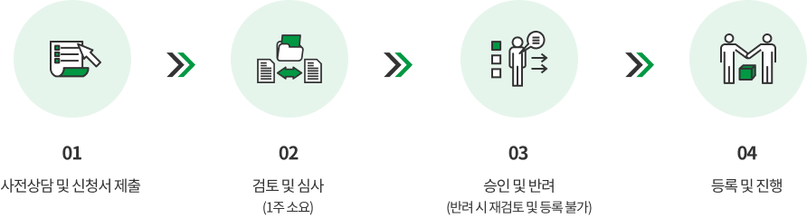
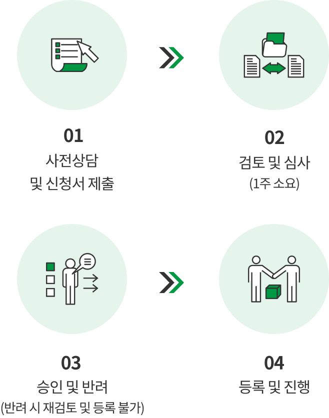

센터사업
자원봉사 단체
-
자원봉사단체란?
5인 이상의 자원봉사자가 공동의 목표를 가지고 계속적인 봉사활동을 하기 위해 결성한 단체
-
자원봉사단체 등록기준
- 자원봉사단체 회원 50%이상 성동구에 거주 또는 활동처가 성동구 소재
- 단체장 및 임원을 포함한 회원이 최소 5명 이상으로 구성
- 무보수성, 자발성, 공익성, 비영리성, 비정파성, 비종파성의 원칙 준수 등
-
자원봉사단체 신청 절차
단체 승인 후 1회 이상 자원봉사 기본 교육 이수 필수 02 검토 및 심사(1주 소요) > 03 승인 및 반려(반려 시 재검토 및 등록 불가) > 04 등록 및 진행" class="mobileHide">  02 검토 및 심사(1주 소요) > 03 승인 및 반려(반려 시 재검토 및 등록 불가) > 04 등록 및 진행" class="mobileShow"> -
단체등록 시 주요 지원사항
- 단체 특성에 맞는 봉사활동처 연계지원
- 봉사활동 홍보 및 성과 관리
- 자원마련을 위한 공모사업 정보 및 참여기회 제공
- 우수자원봉사단체 추천 및 시상의 기회
- 전문 봉사컨설팅 및 교육 등
-
생활편의지원
- 그린맘
- 대한미용사회 성동구지회
- 더 나눔
- 서울봉사
- 섬김봉사단 (자라는 봉사단, 월드 꿈쟁이)
- 사근문화제작소
- 성동 어머니회
- 성동 효정 봉사단
- 성동구정평가단
- 신크마리 봉사단
- 아동위원협의회
- 작은거인들
- 제과제빵 봉사단
- 즐거운청년커뮤니티'e끌림'
- 키비탄
-
주거환경
- KnockKnock(낙낙)
- ku-hope
- 내내로
- 달맞이공동체 봉사단
- 성아공 연합회 아파트봉사단
- 한양대 해비타트
- 한양마을공동체
-
환경보호
- 가드너의그린케어
- 무궁화사랑봉사단
- 성동 ESG 봉사단
- 성동사랑봉사단
- 신천지 봉사단 성동지부
- 왕십리성당 환경봉사
- 주부환경연합회
- 트윈스(twins)
-
재난재해 및 안전예방
- 대한적십자봉사회 성동구협의회
- 성동구 바로봉사단
- 성동모범운전자회
- 월남전참전자회 성동구지회
- 자율방범순찰대
-
보건의료
- 보건의료통합봉사회 서울성동지부
-
교육 및 멘토링
- 50+사랑의 실천
- 라이트라스마을봉사단
- 올레모둠
- 도담: Do Dam
-
문화행사
- HYU_VOLUNTEERS_꿈꿈
- MVP미디어봉사단
- 꿈꾸는 붓 (13기)
- 민주평화통일자문회의
- 바르게살기위원회 성동구협의회
- 새마을문고성동구지부
- 새마을부녀회성동구지회
- 새마을지도자성동구협의회
- 사랑의열매봉사단
- 성동구 여성단체연합회
- 성동구립 소년소녀합창단
- 성동구민기자단
- 성동구청소년지도협의회
- 성동문화원 성동문화사랑회
- 여성친화도시 주민참여단
- 역사 울림 성동
- 커피로 그리는 꿈
- 토마스실버악단
- 한국자유총연맹 성동구 여성지회
- 한국자유총연맹성동구지회
- 한마음 실버 봉사단
- "행복나누리 (구 풍선아트봉사단)"
-
자원봉사교육
- 성동교육강사전문봉사단
-
기타
- 링크임팩트
- 마도로스
- 보이스드림
- 성동여성트위터
- 성동카카오톡공유단
- 성한 (성균관, 한양대 법학)
- 킹십리
- 펀!펀! 마주아리
- 한양임팩트